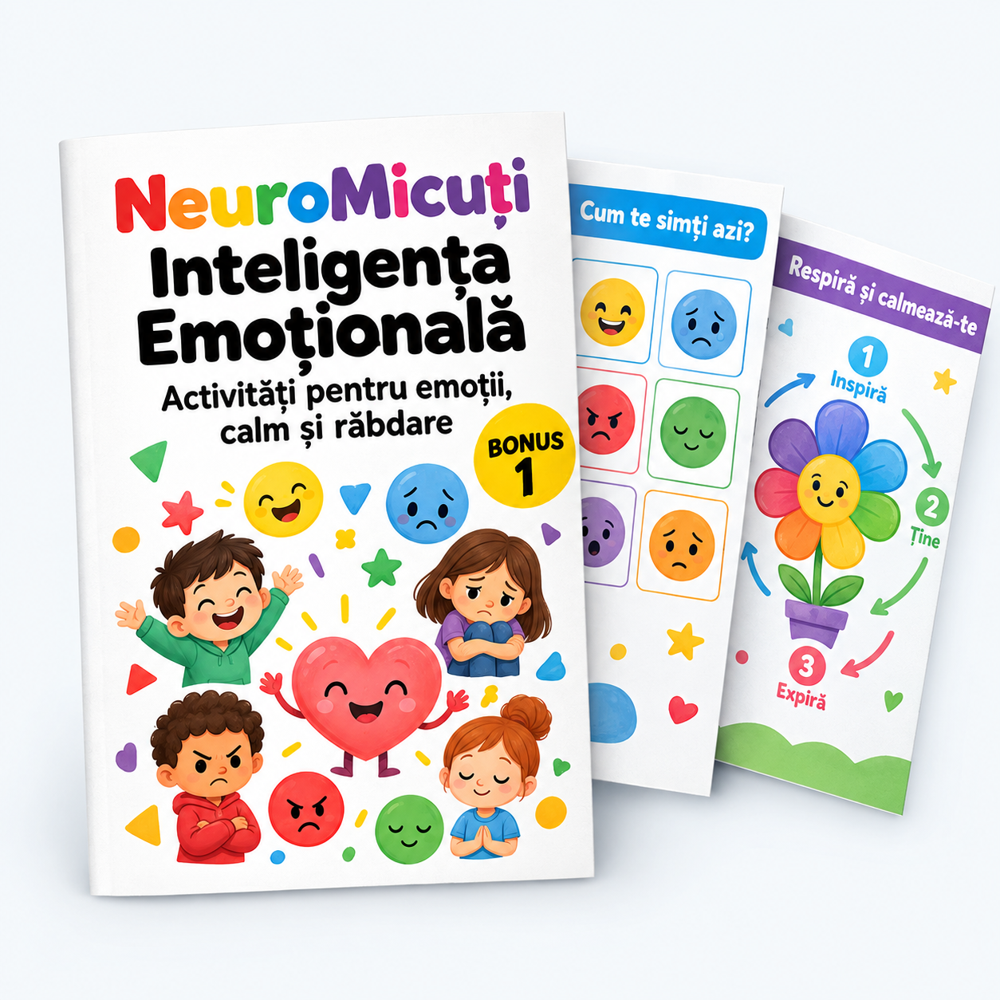

Copilul tău va înțelege că toate emoțiile sunt normale și că fiecare are un rol.
Copiii nu se nasc știind ce simt. Trebuie să învețe — la fel cum învață să citească sau să numere.
| Emoția | Ce simte copilul | Cum o observi |
|---|---|---|
| Bucurie | Energie, zâmbet, chef de joacă | Râde, sare, vorbește repede |
| Tristețe | Lipsă de energie, nevoie de liniște | Se retrage, vorbește încet |
| Furie | Tensiune, impuls de a acționa | Strigă, lovește, strânge pumnii |
| Frică | Neliniște, nevoia de protecție | Se ascunde, se agață de tine |
| Surpriză | Atenție bruscă, curiozitate | Ochii mari, gura deschisă |
| Dezgust | Respingere, dorință de a se îndepărta | Strâmbă din nas, se trage înapoi |
Copilul tău va putea să numească ce simte, nu doar să reacționeze.
Primul pas: să pui un nume pe ce simți. Când copilul poate spune „Sunt furios", e deja la jumătate din drum.
| Ce simte în corp | Emoția probabilă | Ce poate spune |
|---|---|---|
| Fluturi în stomac | Emoție / frică | „Simt fluturi în burtică" |
| Față fierbinte, mâini strânse | Furie | „Simt că fierb pe dinăuntru" |
| Greutate în piept | Tristețe | „Am ceva greu pe piept" |
| Picioare care vor să sară | Bucurie / entuziasm | „Simt că vreau să sar!" |
| Tensiune în umeri | Stres / anxietate | „Am umerii încordați" |
Desenează împreună cu copilul un termometru pe o foaie mare, de la 1 (calm) la 5 (explozie). În fiecare seară, copilul arată unde a fost ziua lui. Cu timpul, va recunoaște semnele de la nivelul 2-3, înainte să ajungă la 5.
Activități concrete, gata de folosit — câte 5 pentru fiecare emoție de bază.
Fiecare activitate durează 5-10 minute. Nu ai nevoie de materiale speciale — doar hârtie, creioane și imaginație.
4 tehnici pe care copilul le poate folosi singur, oricând, oriunde.
Când un copil e copleșit de emoții, nu poate gândi clar. Tehnicile de mai jos aduc corpul la calm, iar apoi mintea urmează.
Repetă de 3-4 ori. Desenează un pătrat pe hârtie și urmărește laturile cu degetul.
Numește:
Un plan de 10 minute pe zi care transformă emoțiile din obstacol în abilitate.
| Moment | Activitate | Durată |
|---|---|---|
| Dimineața | Check-in emoțional: „Cum te simți azi?" | 2 min |
| După școală | O activitate din cele 30 (Secțiunea 3) | 5-8 min |
| Seara | Borcanul cu bucurii + „Ce ai învățat azi despre emoții?" | 2-3 min |
| Ziua | Emoția | Activitatea |
|---|---|---|
| Luni | Bucurie | Borcanul cu bucurii |
| Marți | Tristețe | Desenează tristețea |
| Miercuri | Furie | Semafor emoțional |
| Joi | Frică | Monstrul prieten |
| Vineri | Surpriză | Cutia misterioasă |
| Sâmbătă | Calmare | Respirația pătrat |
| Duminică | Recapitulare | Termometrul emoțiilor |
Alege o activitate din Secțiunea 3 și fă-o azi cu copilul tău. Nu trebuie să fie perfectă — trebuie doar să înceapă.
Apoi deschide materialul principal NeuroMicuți și printează primele 3 fișe de concentrare. Emoțiile și concentrarea se antrenează cel mai bine împreună.